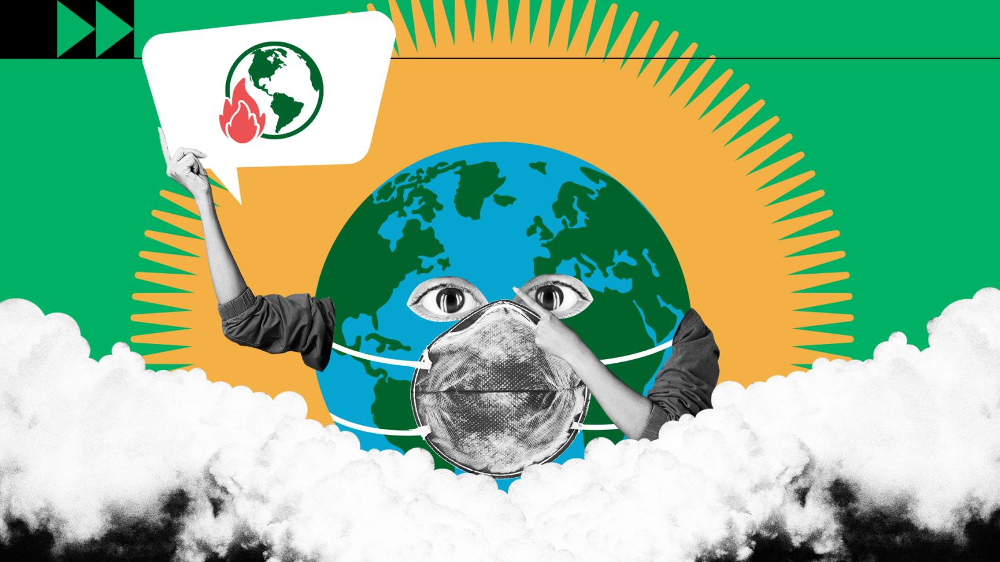
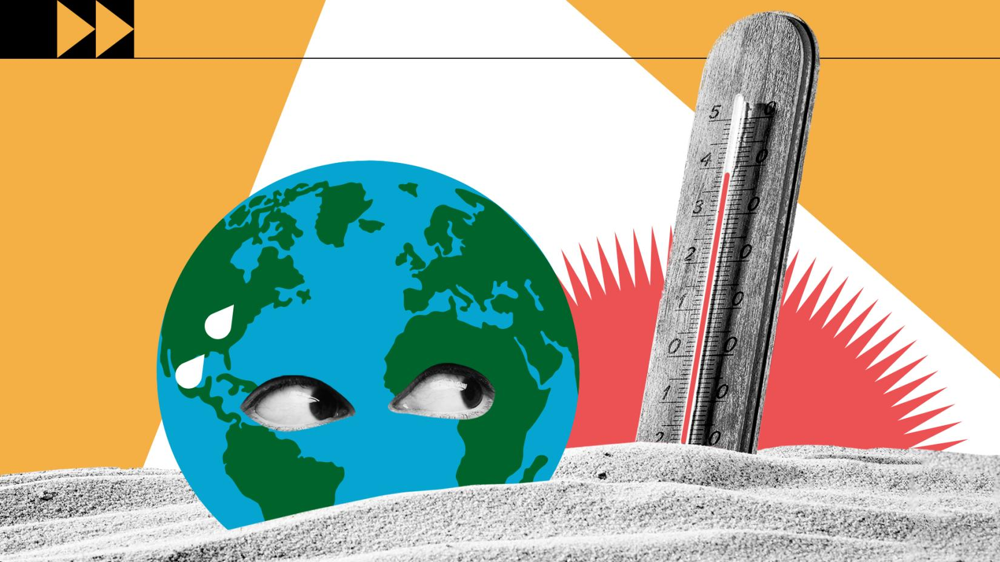
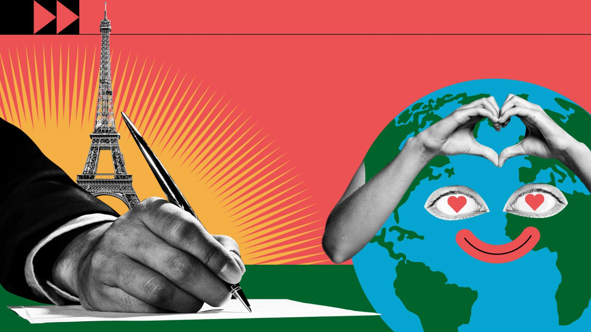
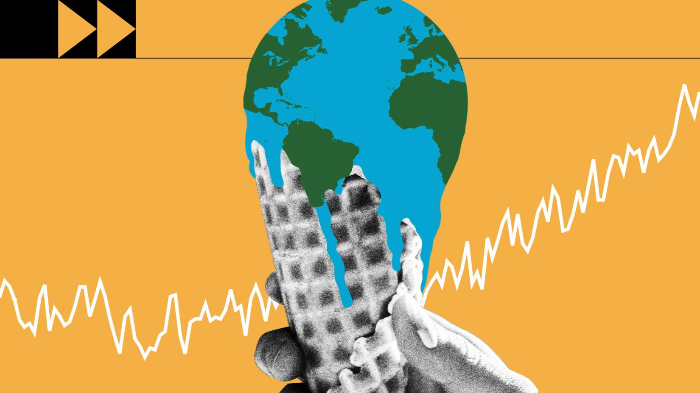
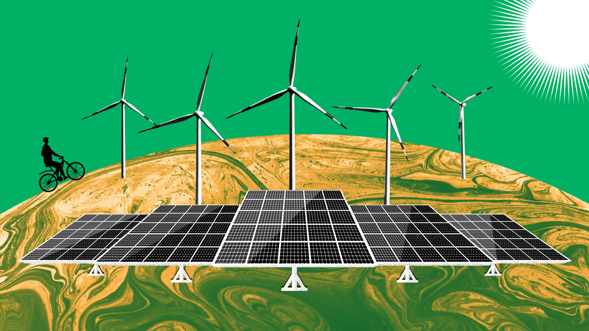
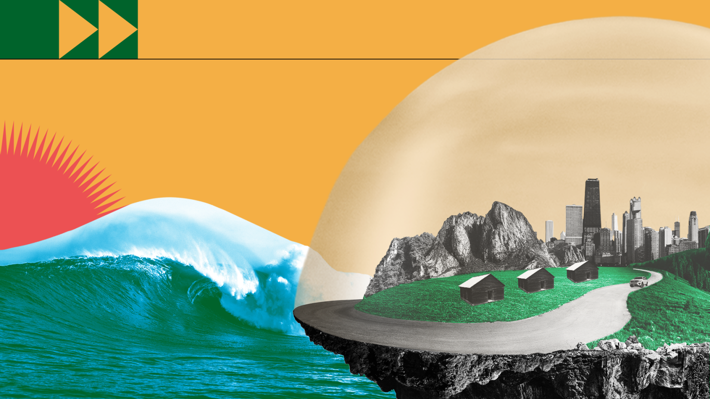
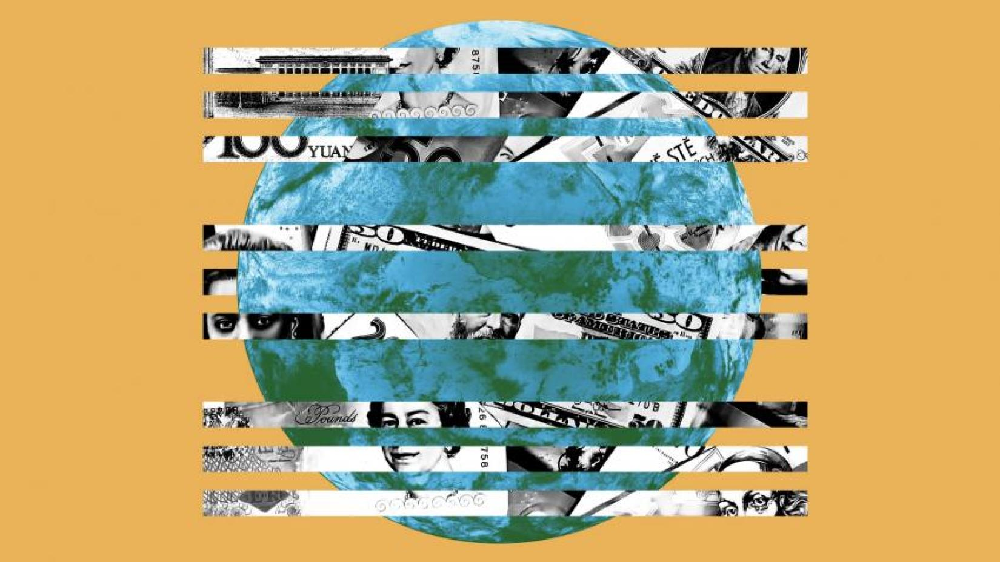
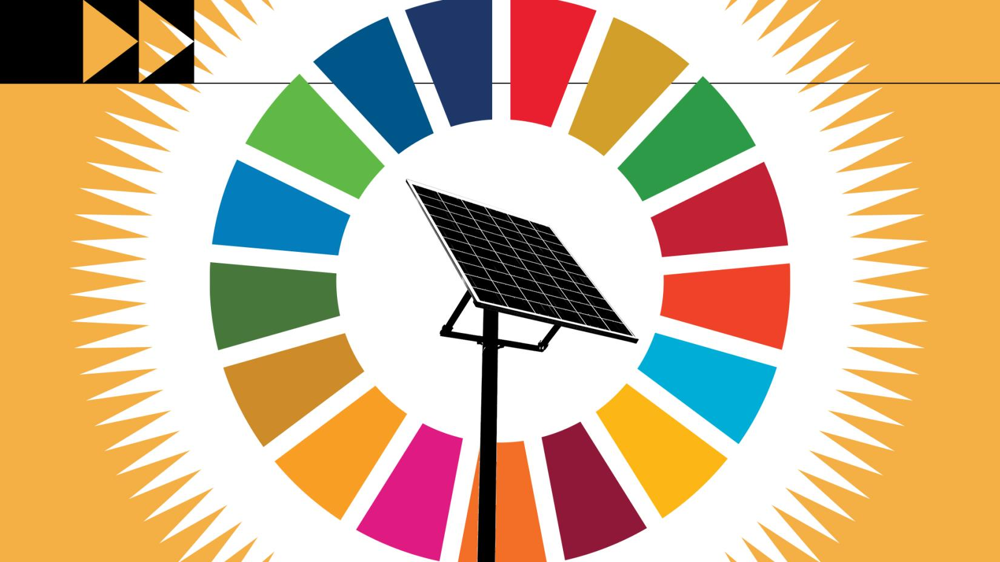

Sobre a campanha
As mudanças climáticas são transformações a longo prazo nos padrões de temperatura e clima. Essas mudanças podem ser naturais, como por meio de variações no ciclo solar. Mas, desde 1800, as atividades humanas têm sido o principal impulsionador das mudanças climáticas, principalmente devido à queima de combustíveis fósseis como carvão, petróleo e gás. A queima de combustíveis fósseis gera emissões de gases de efeito estufa que agem como um grande cobertor em torno da Terra, retendo o calor do sol e aumentando as temperaturas. Exemplos de emissões de gases de efeito estufa que estão causando mudanças climáticas incluem dióxido de carbono e metano. Isso vem do uso de gasolina para dirigir um carro ou carvão para aquecer um prédio, por exemplo. O desmatamento de terras e florestas também pode liberar dióxido de carbono. Aterros para lixo são uma das principais fontes de emissões de metano. Energia, indústria, transporte, edificações, agricultura e uso da terra estão entre os principais emissores.
As concentrações de gases de efeito estufa estão em seus níveis mais altos em 2 milhões de anos
E as emissões continuam aumentando. Como resultado, a Terra está agora cerca de 1,1 °C mais quente do que no final do século XIX. A última década (2011-2020) foi a mais quente já registrada. Muitas pessoas pensam que as mudanças climáticas significam principalmente temperaturas mais altas. Mas o aumento da temperatura é apenas o começo da história. Como a Terra é um sistema, onde tudo está conectado, mudanças em uma área podem influenciar mudanças em todas as outras. As consequências das mudanças climáticas agora incluem, entre outras, secas intensas, escassez de água, incêndios severos, aumento do nível do mar, inundações, derretimento do gelo polar, tempestades catastróficas e declínio da biodiversidade.
As pessoas estão enfrentando as mudanças climáticas de diversas maneiras
As mudanças climáticas podem afetar nossa saúde, capacidade de cultivar alimentos, habitação, segurança e trabalho. Alguns de nós já são mais vulneráveis aos impactos do clima, como as pessoas que vivem em pequenas nações insulares e outros países em desenvolvimento. Condições como a elevação do nível do mar e a intrusão da água salgada avançaram ao ponto de comunidades inteiras terem que se mudar, e secas prolongadas estão colocando as pessoas em risco de fome. No futuro, o número de “refugiados do clima” deverá aumentar.
Cada aumento no aquecimento global é importante
Em uma série de relatórios da ONU, milhares de cientistas e analistas de governos concordaram que limitar o aumento da temperatura global a não mais que 1,5 °C nos ajudaria a evitar os piores impactos climáticos e a manter um clima habitável. No entanto, com base nos atuais planos climáticos nacionais, o aquecimento global deverá atingir cerca de 3,2 °C até o final do século. As emissões que causam as mudanças climáticas vêm de todas as partes do mundo e afetam a todos, mas alguns países produzem muito mais do que outros. Os 100 países menos emissores geram 3 por cento das emissões totais. Os 10 países com as maiores emissões contribuem com 68 por cento. Todos devem tomar medidas climáticas, mas as pessoas e os países que estão criando mais problemas têm uma responsabilidade maior de agir primeiro.
Enfrentamos um grande desafio, mas já conhecemos muitas soluções
Muitas soluções de mudança climática podem oferecer benefícios econômicos, ao mesmo tempo em que melhoram nossas vidas e protegem o meio ambiente. Também temos acordos globais para orientar o progresso, como a Convenção-Quadro das Nações Unidas sobre Mudança do Clima e o Acordo de Paris. Três grandes categorias de ação são: redução das emissões, adaptação aos impactos climáticos e financiamento dos ajustes necessários. Mudar os sistemas de energia de combustíveis fósseis para renováveis, como solar ou eólica, reduzirá as emissões que impulsionam as mudanças climáticas. Mas temos que começar agora. Enquanto uma coalizão crescente de países está se comprometendo com emissões líquidas zero até 2050, cerca de metade dos cortes de emissões devem estar em vigor até 2030 para manter o aquecimento abaixo de 1,5 °C. A produção de combustíveis fósseis deve diminuir cerca de 6 por cento ao ano entre 2020 e 2030.
A adaptação às consequências climáticas protege pessoas, casas, empresas, meios de subsistência, infraestrutura e ecossistemas naturais. Abrange os impactos atuais e prováveis no futuro. A adaptação será necessária em todos os lugares, mas deve ser priorizada agora para as pessoas mais vulneráveis e com menos recursos para lidar com os perigos climáticos. A taxa de retorno pode ser alta. Os sistemas de alerta precoce para desastres, por exemplo, salvam vidas e propriedades e podem proporcionar benefícios até 10 vezes maiores que o custo inicial.
Podemos pagar a conta agora, ou pagar caro no futuro
A ação climática requer investimentos financeiros significativos por parte de governos e empresas. Mas a inação climática é muito mais cara. Uma etapa crítica é que os países industrializados cumpram seu compromisso de fornecer 100 bilhões de dólares por ano aos países em desenvolvimento para que possam se adaptar e avançar em direção a economias mais verdes.

As negociações globais
Saiba mais sobre o Acordo de Paris sobre mudança climática (incluindo uma visão de Aidan Gallagher). Ouça a líder do clima Patricia Espinosa sobre as próximas negociações climáticas em Glasgow. Mantenha-se atualizada(o) à medida que os preparativos se aceleram. Saiba mais.
A ciência
Acesse as últimas pesquisas e análises das Nações Unidas, bem como fatos sobre a ação climática.
Neutralidade de carbono (net-zero)
Quais países estão tomando medidas? Quem são os maiores emissores? Nossa página sobre o net-zero – sobre a neutralidade de carbono – explica por que precisamos de cortes drásticos nas emissões agora e acompanha os compromissos dos países para a ação. Saiba mais.
Adaptação
O que é adaptação ao clima? Por que é tão importante para todos os países? Descubra como podemos proteger vidas e meios de subsistência à medida que o clima muda. Saiba mais.
Finanças
Como o mundo vai pagar a conta? Explicamos as questões e o valor do financiamento da ação climática.
Objetivos de Desenvolvimento Sustentável
A ação climática é uma meta global. E contribui para todos os outros Objetivos de Desenvolvimento Sustentável (ODS). Saiba mais.